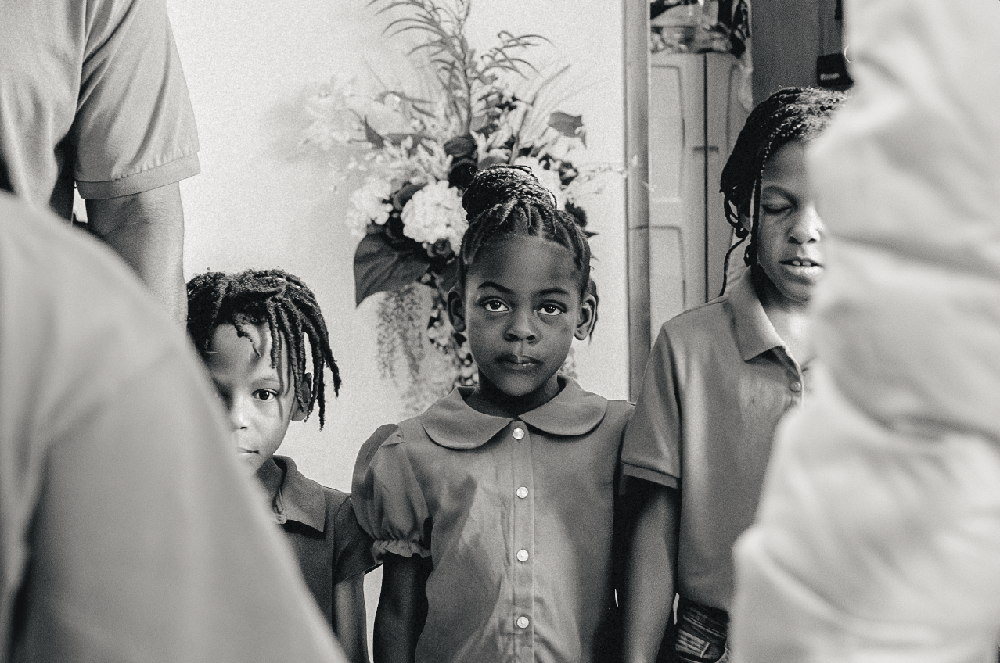
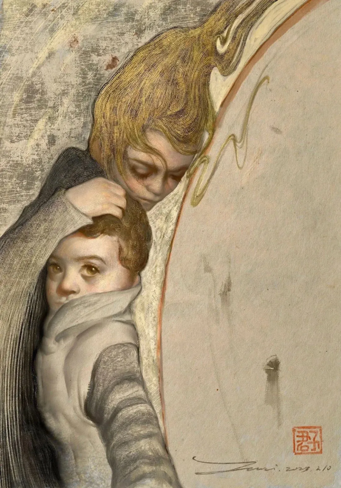

Exhibitions:
One Battle After Another: Living Beyond Disaster in Tallevast (2026)
[→ click to see selected pieces ←]

Wilde Gallery, Williamstown, MA.
Tallevast a small, tight-knit, predominantly Black community in Southwest Florida that sits in the middle of past, present, and future environmental peril.
During the Cold War era, weapons manufacturers seized land adjacent to residents' property to erect an industrial plant to machine beryllium components. After the company polluted the groundwater with improperly treated organic solvents, state agencies knowingly withheld knowledge of the contamination from residents. Remediation of the pollution has only paved the way for new industries to replace the one that left poison in its wake.
Throughout it all, Tallevast community members have stood firmly, organizing for justice, repair, and a self-determined future. This student-organized exhibition compiles years of investigative projects by Williams students to bring Tallevast's story to a broader audience. It invites reflections on the failure of the state agencies to protect citizens, the collusion between government and multinational corporations, and the dynamic resilience of a community in the face of prolonged environmental racism.
Loss and Hope: Art, Memory, and the Afterlives of Catastrophe (2023)
[→ click to see selected pieces ←]

LiSpace Gallery, Beijing.
On February 6, 2023, devastating earthquakes struck Turkey and Syria, claiming tens of thousands of lives and leaving countless in mourning. For many in China, the tragedy also revived memories of the Wenchuan (Sichuan) Earthquake of May 12, 2008, one of the deadliest natural disasters in the country's recent history. Across different places and generations, these catastrophes prompted reflections on loss, resilience, and the relationship between humanity and nature.
In response to these events, "Loss and Hope", a two-week-long art exhibition was held at LiSpace, Beijing. Through painting, photography, sculpture, and mixed-media works, the exhibition explored how catastrophes shape collective memory and cultural expression. Structured around three thematic sections - Witnessing, Healing, and Living with Nature - the exhibition invited visitors to move from the immediate experience of catastrophe, through processes of mourning and recovery, toward a renewed understanding of humanity's place within the natural world.
At the heart of the exhibition's visual identity was The Miracle of Light (2023) by Yu Junzi. The painting was inspired by the story of seven-year-old Ayla, who sheltered her younger brother beneath the rubble for seventeen hours. Through works as such, "Loss and Hope" brings together narratives, collective memory, and ecological reflections, creating a space where grief could be witnessed, resilience honored, and the fragile yet enduring bond between human and nature reimagined.